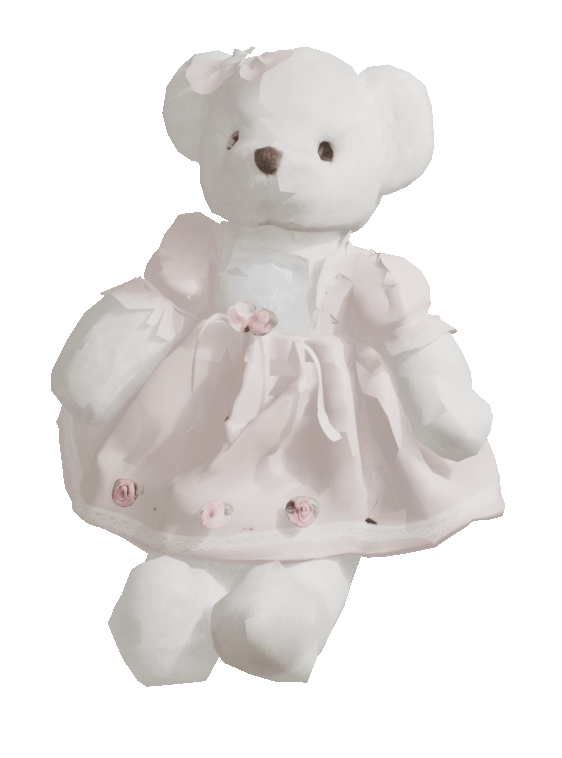
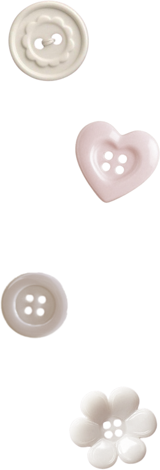
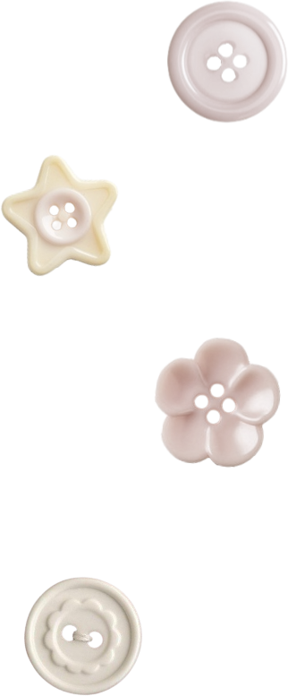
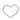
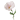
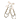

name : puf .. 
i am : an artist, crafter & designer 
born on : august 11 , 1997 
i wish : to live a beautiful life ..
keepsakes : frills, lace, ribbons, teddy bears
aversions : loud noises, intrusive people
note : i am on the autism spectrum